Grasping Synthetic Data Generation#
This tutorial introduces the isaacsim.replicator.grasping extension and its associated UI, isaacsim.replicator.grasping.ui. These tools provide a comprehensive workflow for generating synthetic grasping datasets in Isaac Sim.
Learning Objectives#
After completing this tutorial, you will be able to:
Understand the core components and data flow of the Grasping SDG extension.
Navigate and utilize the Grasping SDG UI to configure and run grasp generation workflows.
Define gripper properties, joint states, and multi-step grasp phases.
Configure object properties and grasp pose sampling parameters.
Execute and interpret the results of physics-based grasp evaluations.
Manage grasping configurations using YAML files for saving, loading, and sharing setups.
The extensions are automatically loaded in Isaac Sim, and the UI window can be opened from the main menu using Tools > Replicator > Grasping.
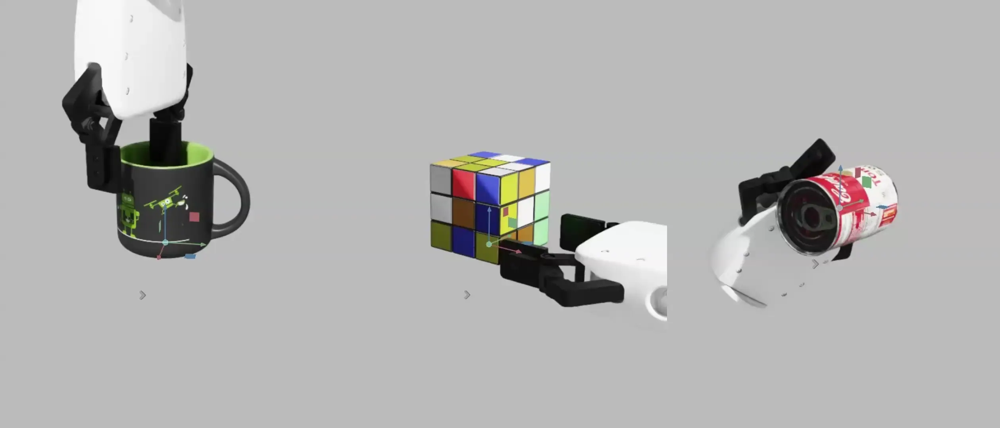
Getting Started#
Before proceeding, it is recommended that you familiarize yourself with:
Simulation Fundamentals: For understanding physics simulation concepts and gripper rigging (for example, drive joints).
Grasp Editor: This tutorial covers related concepts and provides a foundation for grasp definition.
Note
The grasp sampler requires the libspatialindex library. If you see related warnings, install it (for example, on Ubuntu: sudo apt-get install libspatialindex-dev).
This tutorial utilizes an example stage that includes a pre-configured gripper and objects suitable for grasping exercises. You can find this stage at:
https://omniverse-content-production.s3-us-west-2.amazonaws.com/Assets/Isaac/6.0
/Isaac/Samples/Replicator/Stage/sdg_grasping_xarm.usd
The stage asset can be found in the Content Browser under Isaac Sim > Samples > Replicator > Stage > sdg_grasping_xarm.usd, or can be loaded using by inserting the whole URL in the path field.
The example stage features a gripper with drive joints and three objects equipped with rigid body physics and colliders. Gravity is disabled for these objects to simplify initial interactions. The Grasping UI window typically docks in the Property panel upon opening.
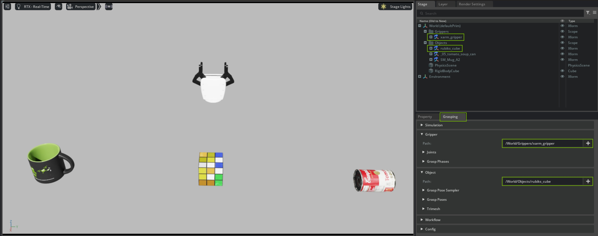
Overview#
The extension is designed to automate the process of finding and evaluating potential grasp poses for a given gripper-object pair. At its core, the workflow revolves around several key components and stages:
Configuration: Defining the specific gripper, the target object, and the parameters that govern how grasps are found and tested.
Grasp Pose Sampling: Algorithms (for example, antipodal samplers) generate a set of candidate grasp poses around the target object. These poses represent potential ways the gripper might hold the object.
Grasp Execution Phases: For each candidate grasp, a sequence of actions, termed “Grasp Phases” (for example, move to pre-grasp, close fingers, lift), is simulated. This allows for defining complex, multi-step grasping behaviors analogous to real-world robot actions.
Physics-Based Evaluation: Each phase of the grasp is simulated in the physics engine. The success or failure of the grasp attempt, along with other metrics (like contact forces, object displacement), can be recorded. In its current state the extension saves the gripper state as result from which the grasps can be evaluated.
Data Logging and Management: Successful grasps and their associated parameters are logged. The entire setup can be saved to and loaded from configuration files (YAML format), ensuring reproducibility and facilitating batch processing.
The GraspingManager class is the central Python API orchestrating these steps, while the UI provides an intuitive way to configure and run this pipeline.
UI Window Overview#
The Grasping UI window provides the interface for setting up and running the grasping simulations workflows. It is organized into several sections, each addressing a specific part of the process. The general workflow involves configuring these sections, typically starting with the gripper and object, then defining the evaluation workflow and simulation parameters, and finally managing the overall configuration.
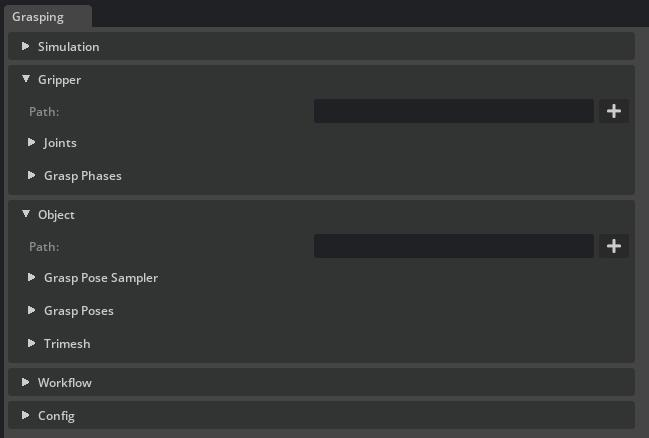
Gripper Section#
This section is dedicated to defining the properties and behavior of the gripper, which is fundamental for any grasp attempt.
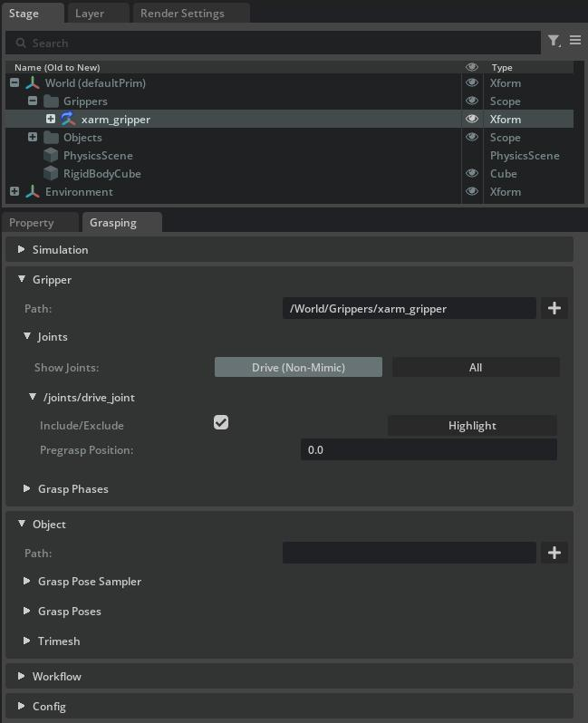
Path: Specify the USD path to the root prim of your gripper (for example,
/World/Robot/gripper_base).Joints: After a gripper is selected, its articulated joints are listed. Here you can:
Include/Exclude: Select the joints that are actively controlled during the grasp phases. These joints have to be drive joints.
Set pre-grasp positions: Define the initial state for each joint, typically an open configuration, before the grasp sequence begins.
Toggle visibility between all joints or of type drive (non-mimic) joints.
Grasp Phases: This powerful feature allows you to define a sequence of discrete actions that constitute a complete grasp attempt. This is analogous to defining a state machine or a sequence of motion primitives for the gripper.
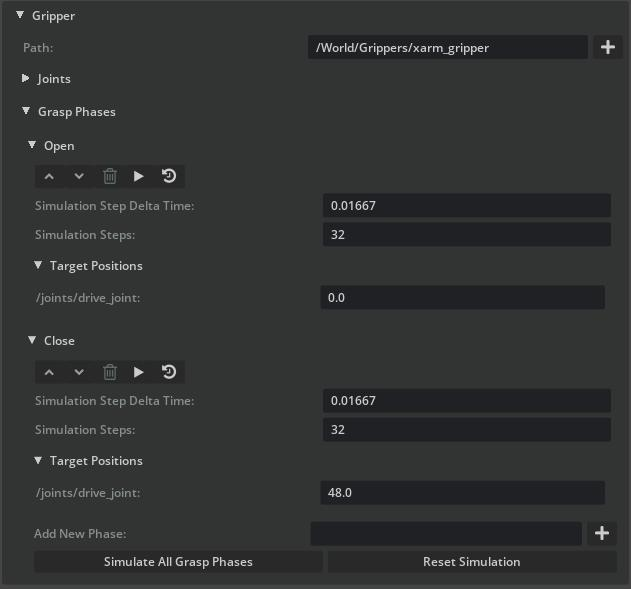
For each phase (for example, “Open”, “Close”), you specify:
Target joint positions for the active gripper joints.
Simulation step delta time (
dt) for the physics steps within this phase.Number of simulation steps to execute for this phase.
Phases can be reordered, deleted, or simulated individually for debugging. If pre-grasp joint positions adequately prepare the gripper (for example, fully open), an explicit “Open” phase might be unnecessary.
Object Section#
This section focuses on specifying the target object and configuring how potential grasp poses are generated for it.
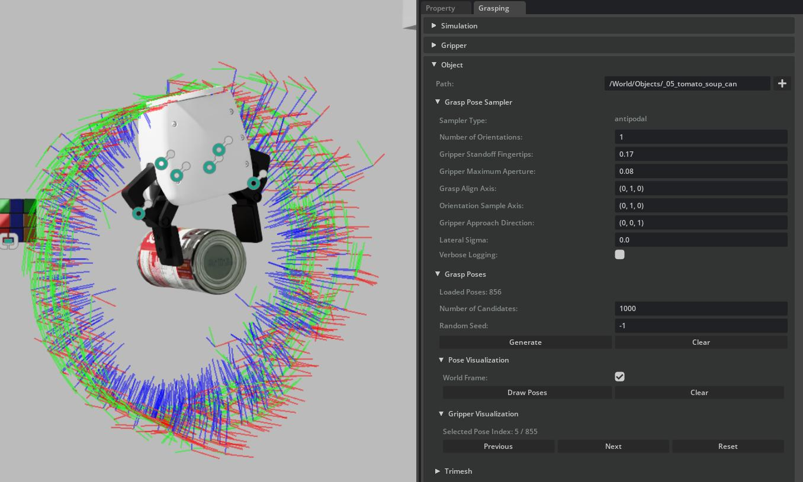
Path: The USD path to the target object prim (for example,
/World/MyObject).Grasp Pose Sampler: This configures the algorithm used to find potential grasp poses. This tutorial primarily uses an antipodal grasp sampler (implemented in
sampler_utils.py). An antipodal grasp is typically stable for parallel-jaw grippers, involving two contact points on opposite sides of the object. Key parameters include:Number of orientations per grasp axis: How many rotational variations around the primary grasp axis to sample.
Gripper standoff distance: The distance from the gripper’s Tool Center Point (TCP) or fingertips to the object surface during the approach phase, crucial for avoiding premature collision.
Maximum gripper aperture: The widest opening of the gripper jaws, filtering out grasps that are too wide for the object.
Alignment axes for the grasp: Defines local gripper axes to align with object features or the grasp line.
Gripper approach direction: The vector along which the gripper moves towards the object.
Lateral perturbation (sigma): Adds randomness to the grasp point location along the grasp axis, allowing for exploration around nominal contact points.
Random seed: For ensuring reproducible sampling results.
Grasp Poses: Manages the set of candidate grasp poses generated by the sampler.
Specify the desired number of candidate poses.
Clear previously generated poses.
Visualize the poses in the viewport (either in world or object-local frames) and cycle through them to inspect their placement.
The following image shows example grasp poses generated by the antipodal sampler on various objects:
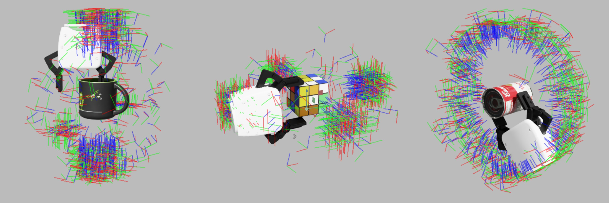
Trimesh: Provides options for debug visualization of the object’s triangle mesh, which is used internally by the sampler for geometric calculations and collision checks.
Note
The Measure Tool can be useful for determining values like gripper aperture or standoff distance.
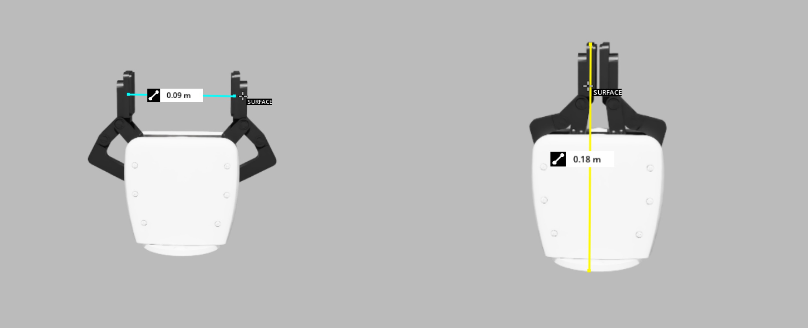
Workflow Section#
The Workflow section is where you orchestrate the actual grasp evaluation process using the configurations defined in the Gripper and Object sections.
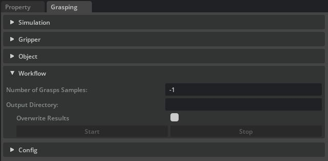
The system first saves the gripper’s initial pose. Then, for each generated grasp pose selected for evaluation, it sequentially executes the defined grasp phases within the physics simulation. After all phases for a given pose are completed, the outcome (for example, success based on object stability, contact with target) and other relevant metrics are recorded.
Number of Grasps Samples: Specify how many of the generated grasp poses should be evaluated. Use -1 to evaluate all available poses.
Output Path: Define the directory and base file name for saving the evaluation results. The results are typically saved in a structured format like YAML, detailing each evaluated grasp and its outcome.
Overwrite Results: If enabled, existing result files at the output path will be overwritten. Otherwise, new files will be created (for example, with incremental numbering) to avoid data loss.
Start Workflow: Initiates the grasp evaluation process. The UI will often provide feedback on the progress.
Simulation Section#
This section allows you to fine-tune global parameters that affect how the physics simulation is run during the grasp evaluation.
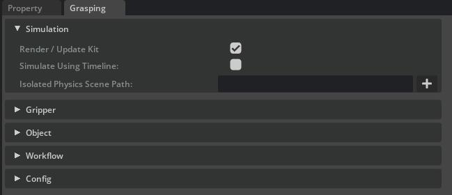
Render each simulation step: Control whether the viewport updates after each individual physics step within a grasp phase. Disabling this can speed up the evaluation process significantly for large datasets, with rendering potentially only occurring after each full grasp attempt or phase.
Simulate using timeline: Choose between advancing the simulation by stepping the main Isaac Sim timeline or by directly stepping the physics scene. Direct physics steps can offer more precise control for rapid evaluations, while timeline-based simulation might be closer to how a full robot application would run.
Isolated physics scene: Optionally specify a path to a Physics Scene prim. If provided, the grasping simulation can be run within this dedicated physics scene, preventing interference from other dynamic objects or physics settings in the main stage. This is useful for ensuring consistent and repeatable grasp evaluations.
Config Section#
The Config section provides the crucial functionality for saving your entire grasping setup to a YAML file and loading it back later. This is essential for reproducibility, sharing configurations, and running batch experiments.
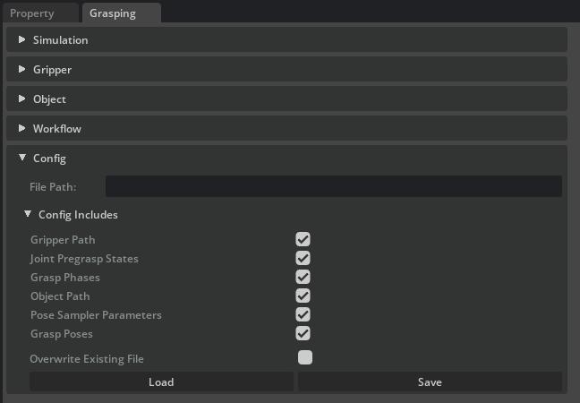
File Path: Specify the path to the YAML configuration file for saving or loading.
Config Includes: Selectively choose which components of the setup are included in the save/load operation. This allows for modular configurations. Options typically include:
Gripper Path
Joint Pregrasp States
Grasp Phases
Object Path
Sampler Parameters
Generated Grasp Poses (if you wish to save a specific set of poses)
Overwrite Existing File: When saving, this option determines if an existing file at the specified path should be overwritten.
Load/Save Buttons: Execute the respective file operations.
This structured UI and configuration system offers detailed control and flexibility for generating diverse grasping datasets.
Configuration File Example#
Below is a snippet illustrating the structure of a YAML configuration file. It can store settings for the gripper, object, sampler, and defined grasp phases. The specific content will depend on which components were selected for inclusion through the ‘Config Includes’ UI options.
xarm_antipodal.yaml
grasp_phases:
- joint_drive_targets:
/World/Grippers/xarm_gripper/joints/drive_joint: 48.0
name: Close
simulation_step_dt: 0.016666666666666666
simulation_steps: 32
gripper_path: /World/Grippers/xarm_gripper
joint_pregrasp_states:
/World/Grippers/xarm_gripper/joints/drive_joint: 0.0
/World/Grippers/xarm_gripper/joints/left_finger_joint: 0.0
/World/Grippers/xarm_gripper/joints/left_inner_knuckle_joint: 0.0
/World/Grippers/xarm_gripper/joints/right_finger_joint: 0.0
/World/Grippers/xarm_gripper/joints/right_inner_knuckle_joint: 0.0
/World/Grippers/xarm_gripper/joints/right_outer_knuckle_joint: 0.0
/World/Grippers/xarm_gripper/root_joint: 0.0
sampler_config:
grasp_align_axis:
- 0
- 1
- 0
gripper_approach_direction:
- 0
- 0
- 1
gripper_maximum_aperture: 0.08
gripper_standoff_fingertips: 0.17000000178813934
lateral_sigma: 0.0
num_candidates: 100
num_orientations: 1
orientation_sample_axis:
- 0
- 1
- 0
random_seed: -1
sampler_type: antipodal
verbose: false
Code Example#
The following scripts demonstrates a complete workflow for generating a grasping dataset using the GraspingManager API. This script programmatically performs the steps configurable through the UI:
opening a stage
setting up the
GraspingManager(potentially by loading a configuration file)generating grasp Poses
evaluating these poses using physics simulation
saving the results
This approach is highly suitable for batch processing or integration into larger robotics workflows. The script can be run directly from the Script Editor or as a Standalone Application.
To run the standalone example from the terminal (on Windows, use python.bat instead of python.sh):
./python.sh standalone_examples/api/isaacsim.replicator.grasping/grasping_workflow_sdg.py
Grasping Synthetic Data Generation Workflow
import asyncio
import os
import omni.kit.app
import omni.usd
from isaacsim.core.utils.extensions import get_extension_path_from_name
from isaacsim.replicator.grasping.grasping_manager import GraspingManager
from isaacsim.storage.native import get_assets_root_path_async
async def run_example_async(
stage_path,
config_path=None,
sampler_config=None,
physics_scene_path=None,
output_dir=None,
gripper_path=None,
object_prim_path=None,
):
assets_root_path = await get_assets_root_path_async()
print(f"Assets root path: {assets_root_path}")
stage_url = assets_root_path + stage_path
print(f"Opening stage: {stage_url}")
await omni.usd.get_context().open_stage_async(stage_url)
stage = omni.usd.get_context().get_stage()
grasping_manager = GraspingManager()
if config_path is not None:
load_status = grasping_manager.load_config(config_path)
print(f"Config load status: {load_status}")
# Make sure the object to grasp is set (either from the config file or from the argument)
if not grasping_manager.get_object_prim_path() and object_prim_path:
grasping_manager.object_path = object_prim_path
if not grasping_manager.get_object_prim_path():
print("Warning: Object to grasp is not set (missing in config and argument). Aborting.")
return
# Make sure the gripper is set (either from the config file or from the argument)
if not grasping_manager.gripper_path and gripper_path:
grasping_manager.gripper_path = gripper_path
if not grasping_manager.gripper_path:
print("Warning: Gripper path is not set (missing in config and argument). Aborting.")
return
# If there are already grasp poses in the configuration, don't generate new ones
if grasping_manager.grasp_locations:
print(
f"Found {len(grasping_manager.grasp_locations)} grasp poses in the configuration file. No new poses will be generated."
)
else:
print("No grasp poses found in configuration, generating new ones...")
# Determine Sampler Configuration
if not (grasping_manager.sampler_config and grasping_manager.sampler_config.get("sampler_type")):
if sampler_config:
grasping_manager.sampler_config = sampler_config.copy()
else:
print(
"Warning: Sampler configuration is missing or invalid (not in config file and not provided as argument). Aborting pose generation."
)
return
# Generate the grasp poses
success_generation = grasping_manager.generate_grasp_poses()
if not success_generation or not grasping_manager.grasp_locations:
print("Failed to generate grasp poses or no poses were generated.")
return
print(f"Generated {len(grasping_manager.grasp_locations)} new grasp poses.")
# Store the initial gripper pose to be able to restore it after the evaluation
grasping_manager.store_initial_gripper_pose()
print("Evaluating grasp poses...")
poses_to_evaluate = grasping_manager.get_grasp_poses(in_world_frame=True)
if not poses_to_evaluate:
print("No poses available to evaluate..")
return
# Determine Output Path
if not output_dir:
print("Warning: Output path is not defined data will not be saved.")
# Set the output path and overwrite flag
grasping_manager.set_results_output_dir(output_dir)
grasping_manager.set_overwrite_results_output(True)
# Determine Physics Scene Path
physics_scene_path_for_eval = None
if physics_scene_path and stage.GetPrimAtPath(physics_scene_path):
physics_scene_path_for_eval = physics_scene_path
print(f"Physics scene path for evaluation: {physics_scene_path_for_eval}")
await grasping_manager.evaluate_grasp_poses(
grasp_poses=poses_to_evaluate,
render=True,
physics_scene_path=physics_scene_path_for_eval,
simulate_using_timeline=False,
)
print("Grasping workflow example finished.")
grasping_manager.clear()
stage_path = "/Isaac/Samples/Replicator/Stage/sdg_grasping_xarm.usd"
ext_path = get_extension_path_from_name("isaacsim.replicator.grasping")
config_path = os.path.join(ext_path, "data/gripper_configs/xarm_antipodal_soup_can.yaml")
output_dir = os.path.join(os.getcwd(), "xarm_antipodal")
asyncio.ensure_future(run_example_async(stage_path=stage_path, config_path=config_path, output_dir=output_dir))
Grasping Synthetic Data Generation Workflow
"""Demonstrate grasp pose generation and evaluation using the grasping manager."""
from isaacsim import SimulationApp
simulation_app = SimulationApp(launch_config={"headless": False})
import asyncio
import os
import omni.kit.app
import omni.usd
from isaacsim.core.experimental.utils.app import get_extension_path as get_extension_path_from_name
from isaacsim.storage.native import get_assets_root_path
# Make sure the grasping extension is loaded and enabled
ext_manager = omni.kit.app.get_app().get_extension_manager()
if not ext_manager.is_extension_enabled("isaacsim.replicator.grasping"):
ext_manager.set_extension_enabled_immediate("isaacsim.replicator.grasping", True)
from isaacsim.replicator.grasping.grasping_manager import GraspingManager
def run_example(
stage_path,
config_path=None,
sampler_config=None,
physics_scene_path=None,
output_dir=None,
gripper_path=None,
object_prim_path=None,
):
"""Run grasp pose generation and physics-based evaluation workflow."""
assets_root_path = get_assets_root_path()
print(f"Assets root path: {assets_root_path}")
stage_url = assets_root_path + stage_path
print(f"Opening stage: {stage_url}")
omni.usd.get_context().open_stage(stage_url)
stage = omni.usd.get_context().get_stage()
grasping_manager = GraspingManager()
if config_path is not None:
load_status = grasping_manager.load_config(config_path)
print(f"Config load status: {load_status}")
# Make sure the object to grasp is set (either from the config file or from the argument)
if not grasping_manager.get_object_prim_path() and object_prim_path:
grasping_manager.object_path = object_prim_path
if not grasping_manager.get_object_prim_path():
print("Warning: Object to grasp is not set (missing in config and argument). Aborting.")
return
# Make sure the gripper is set (either from the config file or from the argument)
if not grasping_manager.gripper_path and gripper_path:
grasping_manager.gripper_path = gripper_path
if not grasping_manager.gripper_path:
print("Warning: Gripper path is not set (missing in config and argument). Aborting.")
return
# If there are already grasp poses in the configuration, don't generate new ones
if grasping_manager.grasp_locations:
print(
f"Found {len(grasping_manager.grasp_locations)} grasp poses in the configuration file. No new poses will be generated."
)
else:
print("No grasp poses found in configuration, generating new ones...")
# Determine Sampler Configuration
if not (grasping_manager.sampler_config and grasping_manager.sampler_config.get("sampler_type")):
if sampler_config:
grasping_manager.sampler_config = sampler_config.copy()
else:
print(
"Warning: Sampler configuration is missing or invalid (not in config file and not provided as argument). Aborting pose generation."
)
return
# Generate the grasp poses
success_generation = grasping_manager.generate_grasp_poses()
if not success_generation or not grasping_manager.grasp_locations:
print("Failed to generate grasp poses or no poses were generated.")
return
print(f"Generated {len(grasping_manager.grasp_locations)} new grasp poses.")
# Store the initial gripper pose to be able to restore it after the evaluation
grasping_manager.store_initial_gripper_pose()
print("Evaluating grasp poses...")
poses_to_evaluate = grasping_manager.get_grasp_poses(in_world_frame=True)
if not poses_to_evaluate:
print("No poses available to evaluate..")
return
# Determine Output Path
if not output_dir:
print("Warning: Output path is not defined data will not be saved.")
# Set the output path and overwrite flag
grasping_manager.set_results_output_dir(output_dir)
grasping_manager.set_overwrite_results_output(True)
# Determine Physics Scene Path
physics_scene_path_for_eval = None
if physics_scene_path and stage.GetPrimAtPath(physics_scene_path):
physics_scene_path_for_eval = physics_scene_path
print(f"Physics scene path for evaluation: {physics_scene_path_for_eval}")
grasping_workflow_task = asyncio.ensure_future(
grasping_manager.evaluate_grasp_poses(
grasp_poses=poses_to_evaluate,
render=True,
physics_scene_path=physics_scene_path_for_eval,
simulate_using_timeline=False,
)
)
while not grasping_workflow_task.done():
simulation_app.update()
print("Grasping workflow example finished.")
grasping_manager.clear()
stage_path = "/Isaac/Samples/Replicator/Stage/sdg_grasping_xarm.usd"
ext_path = get_extension_path_from_name("isaacsim.replicator.grasping")
config_path = os.path.join(ext_path, "data/gripper_configs/xarm_antipodal_soup_can.yaml")
output_dir = os.path.join(os.getcwd(), "xarm_antipodal")
run_example(stage_path=stage_path, config_path=config_path, output_dir=output_dir)